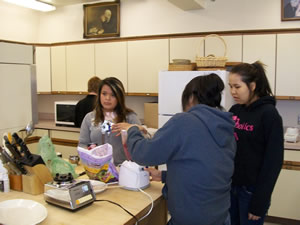

Worship times
Sunday 10:30 AM
Office hours
10:00 AM - 2:00 PM M-F
Pastor
Monday - Wednesday:
9:00 AM - Noon
Thursday: 10:00 AM - 1:00 PM
and by appointment
Friday: day off
907-747-3338

Sitka Lutheran Church
PO Box 598
224 Lincoln St
Sitka, AK 99835

CONNECT - Contact Sitka Lutheran Church
907-747-3338
sitkalutheranchurch@gmail.com
Office hours
10:00 AM - 2:00 PM M-F
Pastor
Monday - Wednesday:
9:00 AM - Noon
Thursday: 10:00 AM - 1:00 PM
and by appointment
Friday: day off
Mailing Address:
SITKA LUTHERAN CHURCH
PO BOX 598
SITKA, AK 99835
Physical Address:
224 Lincoln Street
CONNECT - Links
Find us on facebook:
- Sitka Lutheran Church
- Southeast Alaska Cluster of the Evangelical Lutheran Church in America
- ALASKA Synod of the Evangelical Lutheran Church in America
Check out our websites:
- Southeast Alaska Cluster of the Evangelical Lutheran Church in America
- ALASKA Synod of the Evangelical Lutheran Church in America
- Evangelical Lutheran Church in America 
- Soul Café
- Living Lutheran